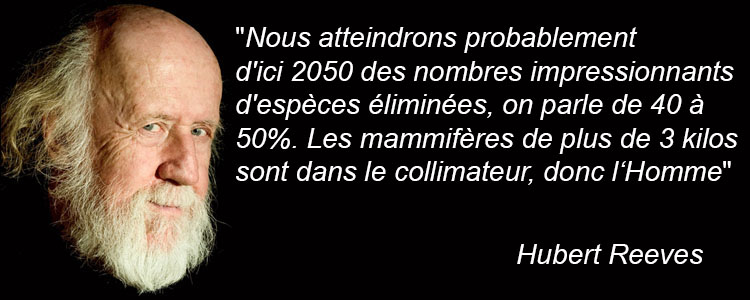
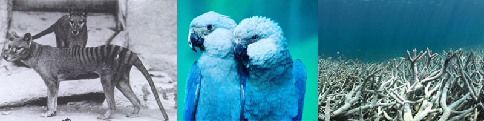
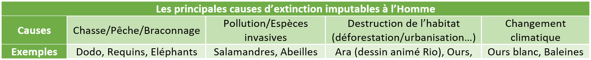
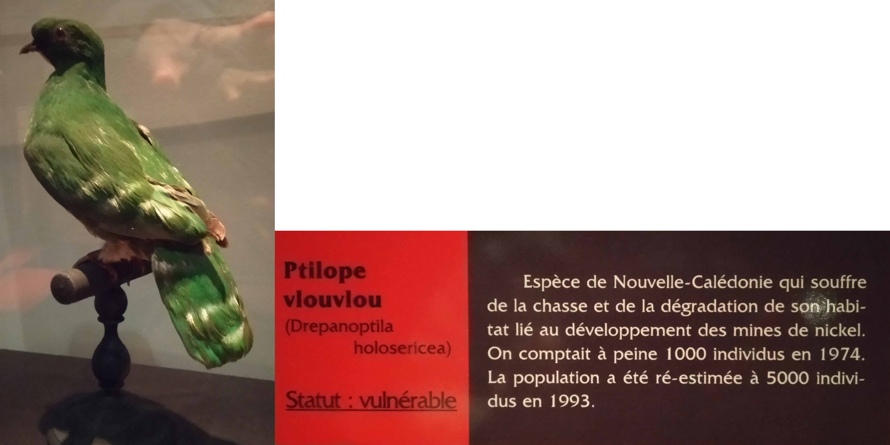
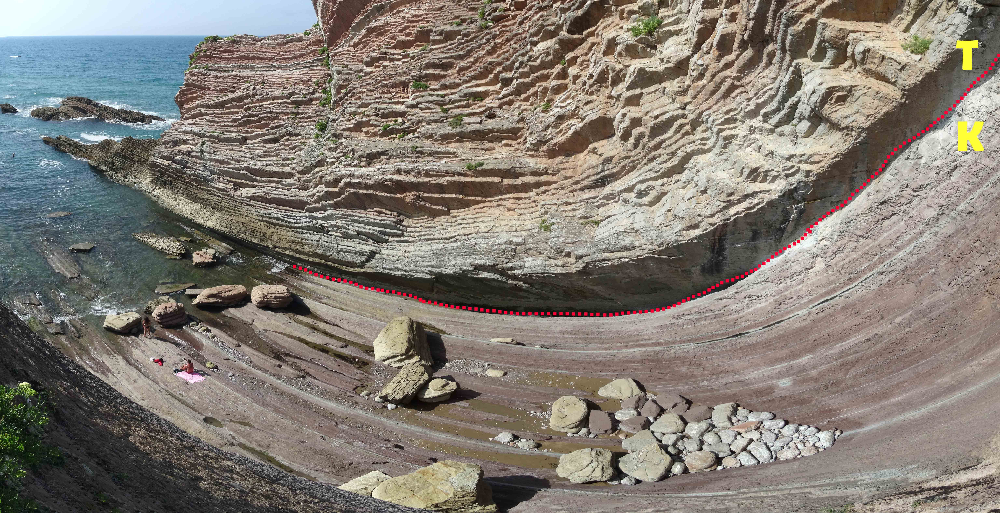
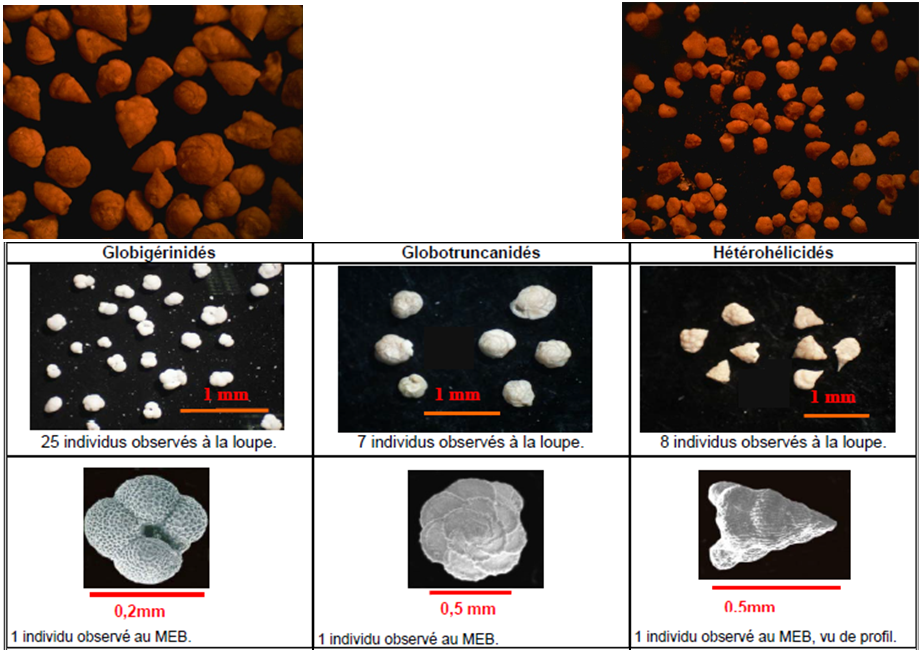
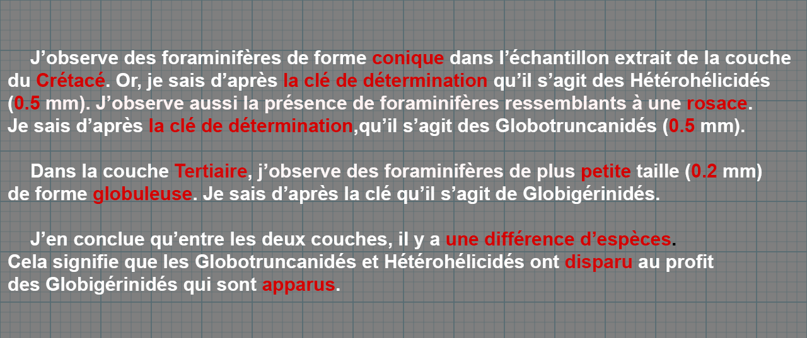
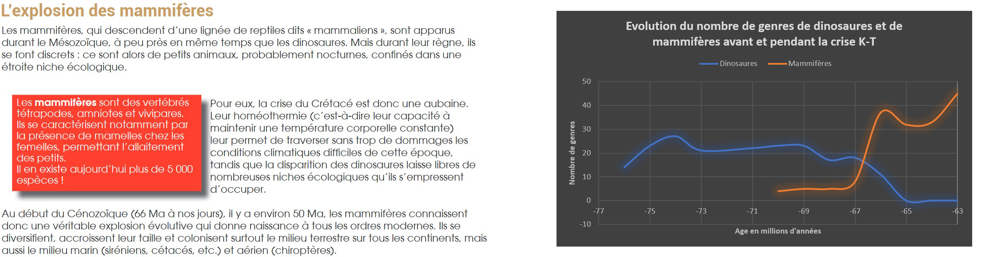
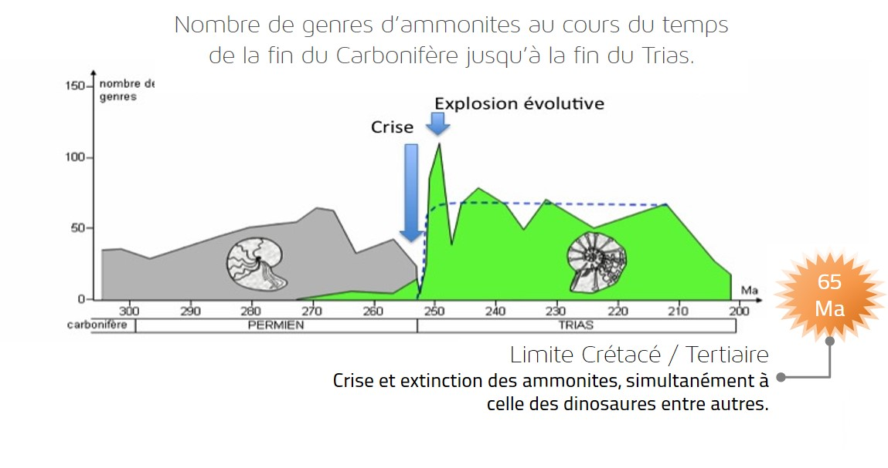

Introduction : Il y a 3.7 milliards d’années environ, la vie est apparue sur Terre. Le vivant s’est diversifié durant de longues périodes, permettant à la vie d’arborer des formes et des tailles diverses. Mais en étudiant des restes fossilisés, force est de constater qu’une majeure partie de la diversité s’est éteinte au cours des temps géologiques et ce à plusieurs reprises. Ce sont les grandes crises biologiques.
Problématique : Qu’est ce qui caractérise les crises biologiques et quelles sont leurs conséquences ?
I. Une exctinction massive actuelle
a. Le constat d'Hubert Reeves

Entre 17 000 et 100 000 espèces disparaissent chaque année. Une plante sur huit est menacée d’extinction ainsi qu'une espèce d'insecte sur trois.
"La disparition d'espèces causée par les activités humaines, en particulier la destruction des habitats, est incontestable mais quelle est l'ampleur du phénomène ? En permanence, des espèces apparaissent et d'autres disparaissent, et ce à un rythme à peu près constant. Les registres fossiles ont cependant montré au moins cinq phases « d'extinction de masse », attribuées à des circonstances exceptionnelles et, depuis quelque temps, beaucoup parlent d'une « sixième extinction de masse » due à l'omniprésence des humains et à leur hyperactivité. Il n'y a cependant pas d'accord sur ces taux d'extinction, difficiles à mesurer.
Une équipe de biologistes, du Mexique et des États-Unis, vient de s'atteler à la tâche pour comparer les disparitions de l'époque récente au « taux habituel », c'est-à-dire celui observé entre deux phases d'extinction massive. Les chercheurs expliquent qu'ils ont pris en compte les disparitions de vertébrés, relativement documentées depuis le XVIe siècle, surtout pour les mammifères, puis celle des oiseaux à partir du XIXe siècle, et des poissons, amphibiens et reptiles aux siècles suivants.
Pour les extinctions récentes, l'étude prend comme référence les données de l'Union internationale pour la conservation de la nature (UICN), qui publie régulièrement sa fameuse Liste rouge, avec notamment trois catégories pour classer les espèces les plus mal en point : éteintes (EX), éteintes à l'état sauvage (EXW) et certainement éteintes (PE), quand les données sont insuffisantes. Les auteurs ont retenu deux références, qualifiées de « modeste » et « très modeste » (« conservative » et «very conservative»), la première sommant les catégories EX, EXW et PE et la seconde ne retenant que la catégorie EX."

×
• Consigne 1 : Citer deux indices dans le texte qui expliquent les causes de cette extinction
• Question 1 : Décrivez la tendance de l’extinction des Mammifères et des oiseaux ?
• Question 2 : Par combien a été multipliée cette extinction depuis les années 1500 ?
b. Les origines de cette exctinction
• Option 1 : A l'aide d'internet ou de vos connaissances, trouver des hypothèses permettant d’expliquer la disparition des espèces d'aujourd’hui (avec des exemples pour chaque).
• Option 2 : Par binôme, réaliser un poster sur une espèce en danger, en expliquant : son mode de vie, les raisons de son déclin ou de son extinction, des solutions pour y remédier.
• Option 3 : Sortie au Museum d'Histoire Naturelle de Grenoble.

Exemple de tableau récapitulant les causes de cette exctinction de masse.
Une salle au Muséum de Grenoble est dédiée aux espèces qui subissent des modifications de leur milieu de vie par l'Homme.

Exemple du Ptilope Vlouvlou
BILAN : Une exctinction de masse est en cours et elle est causée par L'Homme. De nombreux facteurs sont en jeux. Pour que cette extinction soit considérée comme une crise biologique, elle doit répondre aux critères suivants :
• Toucher 75 % des espèces.
• Affecter indifférement toutes les espèces.
• Se localiser sur toute la planète.
Transition : Une sixième crise est sur le point de se produire, qu'en est-il des cinq autres ?
II. Des crises biologiques passées
Afin d'étudier les 5 crises biologiques qu'a connu la Terre, les élèves seront lancés dans un TP comportant 5 postes :
• Un poste analysera les contenus en foraminifères de la crise K-T.
• 4 autres postes étudieront chacun une crise biologique.
Chaque poste constitue un groupe d'expert. Puis des groupes de colloque seront établis afin de créer une frise chronologique.
a. Les traces fossilisées de la crise K-T

×
Au Pays-Basque (plage de Zumaia), on retrouve deux couches différentes. Elles sont datées aux alentours de -65 Ma. Leur composition est analysée au microscope et à l'aide d'une clé de détermination, des espèces peuvent être nommées.

×
• Question 1 : Existe-il une différence entre les deux couches ?
• Consigne 1 : Donner votre conclusion concernant ces observations.
Différenciation : Une aide peut être fournie pour les élèves en difficulté, sous la forme d'un texte à trous. De manière générale, voici la trace écrite qui doit en ressortir :

×
b. Les extinctions majeures et leurs causes
• Option 1 : Utiliser de la documentation (site internet, manuels...)
• Option 2 : Sortie au Muséum de Grenoble.
Les 4 autres groupes se concentrent sur les crises antérieures à 65 Ma. Soit à l'aide de documents, soit en repérant les indices dans le Muséum si une sortie est faite.
×
Une fois toutes les informations récoltées, les élèves devront construire une frise chronologique en faisant ressortir les élements suivants :
• Dates
• Causes
• Pourcentage d'extinction
• Exemples d'organismes touchés
• La justesse et la propreté
Transition : Les crises sont-elles forcément synonyme d'extinction et de disparition d'espèces ?
III. Les crises, moteur de la diversification
a. L'essors des mammifères il y a 65 Ma
• Consigne : A l’aide du texte et du graphique expliquer pourquoi les mammifères se sont développés il y a 65 Ma.

Trace écrite de l'élève : J’observe qu’il y a 67 Ma que le nombre de genres au sein des mammifères a augmenté. En effet, il est passé de 10 genres il y a 67 Ma à presque 40 genres il y a 66 Ma. J’observe aussi que le nombre de genres de dinosaures a quant à lui diminué, en effet il est passé de 20 genres il y a 65 MA, à 0.
D’après le texte, je sais que la disparition des dinosaures a permis aux mammifères de se développer car elle a libéré des territoires.
b. Le principe de niche écologique vacante
• Consigne : Transposer l’extinction des dinosaures à l’hypothétique disparition des êtres humains.
« Sapiens ouvre l’époque de l’Anthropocène. Il en est l’origine, le héros et la victime assurée. Seuls lui survivraient, selon J.Zalasiewicz, chercheur de l’université de Leicester, paléo géologue et « spécialiste d’écologie scientifique », les rats. Les rats, cette espèce qui suit l’Homme depuis la nuit des temps et qui, dans le désordre qui s’annonce, atteindraient des tailles monstrueuses [80Kg]. « Zalasiewicz pense, et il s’agit là de l’avis d’un spécialiste de l’évolution de la vie, qu’il [le rat géant] dominera un jour le monde. » « Selon Zalasiewicz, les descendants des rats d’aujourd’hui effectueront une radiation évolutive qui remplira les niches devenues vides grâce à Rattus exulans (le rat du pacifique) et Rattus norvegicus (le rat norvégien) ». »
Trace écrite de l'élève : Si les humains venaient à disparaitre, selon ce paléo-géologue, il est probable que les rats se développeraient. Car, comme les dinosaures l’ont fait pour nous, nous leur libèrerions de l’espace pour s’épanouir. Ils pourraient ainsi peser jusqu’à 80 Kg.

Radiation évolutive de certains genres d'ammonites suite à la crise K-T.
• Question 1 : Que se passe-t-il immédiatement après la crise ?
• Question 2 : Les crises sont-elles forcément synonyme de disparition ?
Trace écrite de l'élève : J’observe que la crise se caractérise par une diminution du nombre de genres (ammonite grise). En effet, on passe de 40 genres à 0 au moment de la crise. J’en conclue donc qu’elle a impacté les genres d’ammonites « grises ». J’observe qu’immédiatement après la crise, on a une augmentation du nombre de genre d’ammonites « vertes ». En effet elles passent de 10 genres à plus de 100. J’en conclue que les crises sont sources de disparition mais aussi de diversification.
Transition : Mais dans ce cas pourquoi s’inquiéter des espèces qui disparaissent aujourd’hui par notre faute ?
Conclusion : L’extinction de masse que nous connaissons aujourd’hui est sur le point de devenir la 6ème crise biologique de la Terre. Comparer l’âge de la Terre à une horloge de 12 heures, nous permet de comprendre l’importance de la préservation des espèces actuelles : nous ne reverrons plus jamais la même diversité.
H. Reeves : "l'espèce humaine est responsable de cette extinction, elle en est une victime potentielle, et elle peut également en être le sauveur possible."